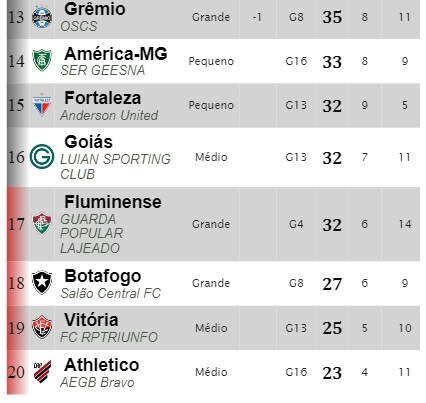
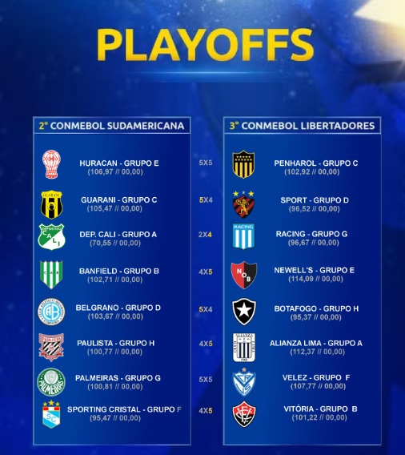

Campeonato de Cartola
A vitória no cartola é o sucesso do seu time!

Redação Cartola - 25/09/2024 - 7h18min
Participando do Campeonato Nacional, Copa do Brasil e Libertadores da América, Botafogo do "Salão Central FC" segue mantendo a média em ambas competições, indo em mal em todas elas. No campeonato Nacional, clube carioca figura entre os quatro integrantes da atual zona de rebaixamento, fato que a torcida credita unicamento ao técnico "Salão Central FC", que assumiu o time na 18ª rodada e até agora não conseguiu uma mísera vitória, com cinco derrotas, cinco empates e pífios 17% de aproveitamento . Na Copa do Brasil, clube iniciou com a vantagem de iniciar a competição direto nas oitavas-de-finais, fase esta em que não teve dificuldade para superar o América-RJ do "Seja o que Dus Quiser E.C", nos dois jogos. No entanto, ao se deparar com a primeira pedreira na competição, Corinthians nas quartas-de-finais, clube amargou derrota no primeiro confronto, o que obriga o professor "Salão Central FC" a vencer no duelo da volta, uma vez que, em caso de novo empate, a vantagem será do Corinthians, que apresenta melhor campanha no Campeoanto Nacional. Para fechar a fase tenebrosa, Botafogo, ao ganhar a vaga para a disputa dos playoffs da Sulamericana como consolação à eliminação precoce da Libertadores da América, começou perdendo para o perigoso Belgrano do experimentado "SER XANTOSKA", Campeão deste torneio no ano de 2022. Para reverter o placar diante da esquadra argentina, Botafogo precisará vencer o jogo de volta por dois gols de diferença. Para o atual treinador, mais que a classificação em pelo menos em uma dessas duas copas, vale a permanência na cadeira de comando do vestiáro do "fogão". Com apenas 8% de aprovação entre os torcedores, fato é que, havendo eliminação em simultânea nestas duas copas, estes maus resultados servirão como ponto de ruptura no casamento entre a direção de futebol do Botafogo e o treiandor "Salão Central FC".
Abaixo, a péssima fase do Botafogo sob o comando do "Salão Central FC", forte candidato à Sèrie B de 2025, bem como os demais resultados dos jogos de ida dos playoffs da Sulamericana.  